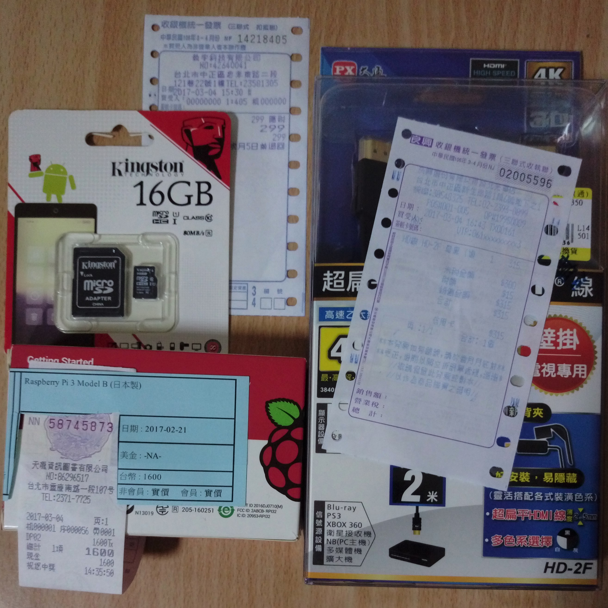

選購
2017.03.05
頁籤
第一次入手

這是筆者 2017.03.04 在買的：
- 「Raspberry Pi 3 Model B （日本製）」： 1600 元（天瓏書局）
- 「金士頓 SDC10G2/16GBFR」： 299 元（光華商圈）
- 「大通 超扁平壁掛 HDMI 線 2 米」： 315 元（光華商圈 - 良興）
筆者也沒做什麼功課， 僅僅抱著一股衝動就是想玩樹莓派。
原本很擔心買錯， 後來到天瓏也就只看到一種，
至於有沒有買貴，好像蠻多大大都敗在天瓏（天瓏因此 ...）。